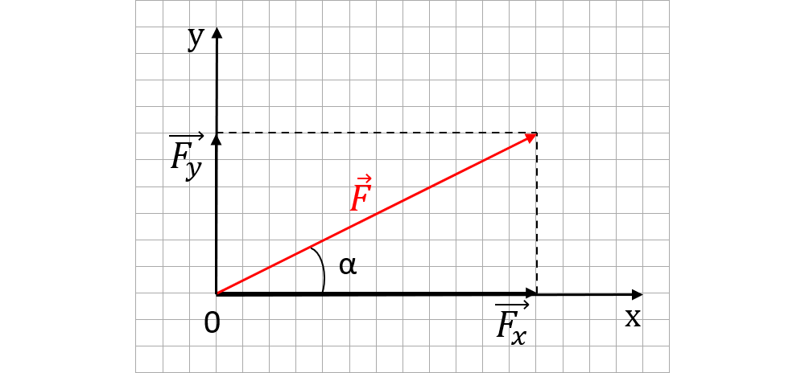

Lecția 16 – Descompunerea unei forțe după două direcții reciproc perpendiculare
Uneori o forță acționează oblic. Pentru a înțelege efectele ei, o înlocuim cu două componente pe direcții perpendiculare.
Forța oblică și componentele ei

Imaginea arată cum o forță oblică poate fi proiectată pe două direcții perpendiculare.
Exemplul saniei trase cu un fir
Când un om trage o sanie cu un fir înclinat, forța exercitată prin fir nu acționează doar înainte.
Ea are un efect pe direcția mișcării și un efect pe direcția perpendiculară pe zăpadă.
Ce înseamnă descompunerea unei forțe?
Descompunerea unei forțe înseamnă înlocuirea ei cu două forțe componente, care au împreună același efect ca forța inițială.
Dacă direcțiile sunt perpendiculare, componentele se pot reprezenta ca laturile unui dreptunghi, iar forța inițială este diagonala.
Componentele unei forțe
Dacă forța \(F\) face un unghi \(\alpha\) cu direcția \(Ox\), atunci:
Pentru componente perpendiculare, modulul forței se poate calcula cu relația:
Greutatea pe planul înclinat
Pe un plan înclinat, greutatea \(G\) se descompune în două componente:
- \(G_{\parallel}\) – paralelă cu planul, tinde să deplaseze corpul în jos;
- \(G_{\perp}\) – perpendiculară pe plan, apasă corpul pe suprafață.
Descompunem o forță
O forță \(F = 10\,N\) face un unghi de \(30^\circ\) cu direcția orizontală.
Calculăm componentele:
Hamacul și tiroliana
Într-un hamac sau pe o tiroliană, greutatea persoanei este susținută de fire sau cabluri.
Forțele din cabluri pot fi mai mari decât greutatea, deoarece fiecare cablu susține doar o componentă a forței.
De aceea, în practică, unghiurile firelor și rezistența cablurilor sunt foarte importante.
Alege varianta corectă
1. Descompunerea unei forțe înseamnă:
Componente perpendiculare
2. Dacă \(F_x\) și \(F_y\) sunt perpendiculare, atunci:
Pe planul înclinat
3. Componenta greutății paralelă cu planul înclinat: